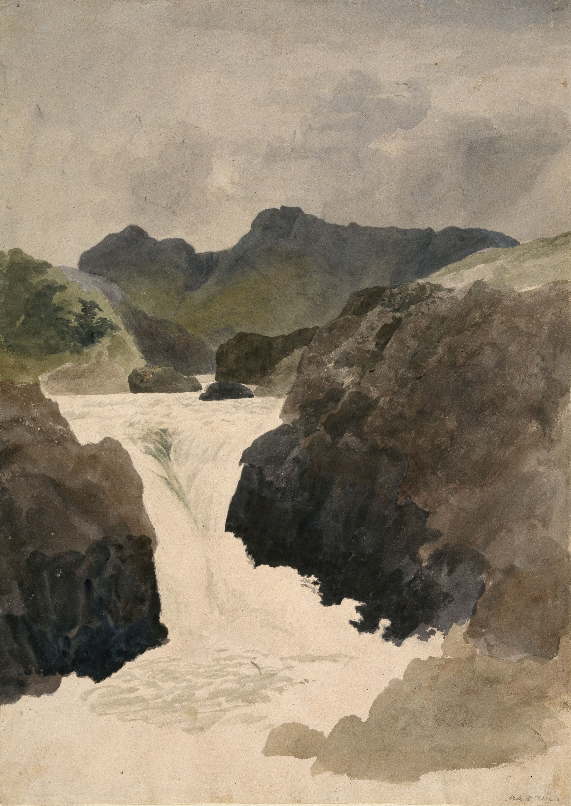

Design Challenge
私は挑戦に直面しました。
The first step was to establish the design challenge. IDEO’s questionnaire helped guide this process.
私は挑戦に直面しました。
The first step was to establish the design challenge. IDEO’s questionnaire helped guide this process.
私は聴衆と目標を見つけました。
After the design challenge and research had been established, the target audience and goals were explored. This revealed what the website ultimately needed to accomplish.